08/08/2025 — Một phụ nữ 35 tuổi với điện tâm đồ sau ROSC này. Hình thái “vây cá mập” (shark fin) có ý nghĩa gì?
Bản dịch tiếng Việt của bài "A 35-year old woman with this post-ROSC ECG. What does “shark fin” morphology mean?" – Dr. Smith’s ECG Blog. Giữ nguyên toàn bộ 10 hình ảnh và 2 video của bản gốc.

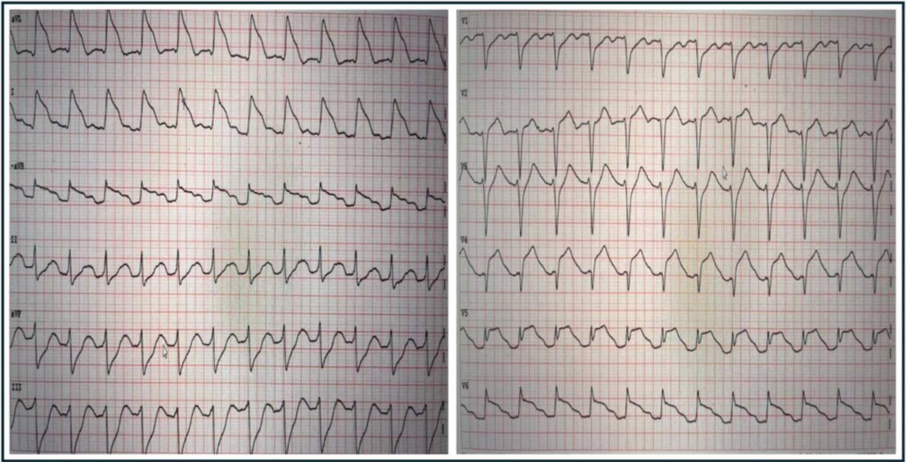
Tác giả: Magnus Nossen.
Bệnh nhân trong ca hôm nay là một phụ nữ 35 tuổi, thừa cân. Chị đột ngột đau ngực và nhanh chóng gọi dịch vụ cấp cứu y tế. Khoảng 10 phút sau, chị ngã quỵ trước sự chứng kiến của những người xung quanh. Khi đội cấp cứu ngoài viện (EMS) tới, bệnh nhân đang rung thất. Tái lập tuần hoàn tự nhiên (ROSC) đạt được sau 10 phút hồi sức, và một điện tâm đồ được ghi ngay lập tức, trình bày dưới đây. Bạn nghĩ gì?
Điện tâm đồ #1

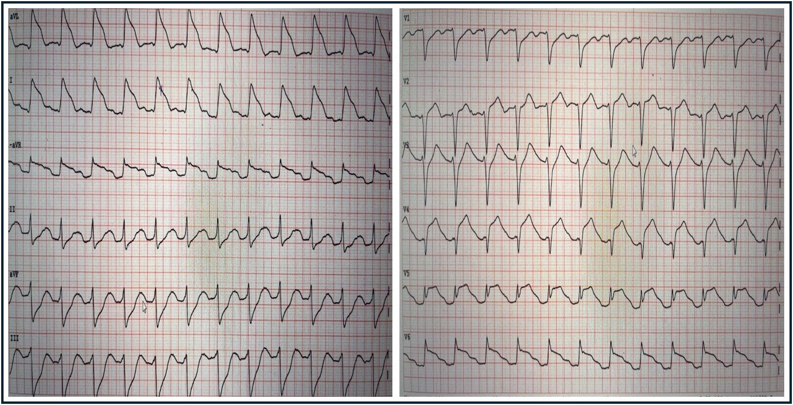
Điện tâm đồ cho thấy một nhịp nhanh đều với tần số 145 lần/phút. Có sóng P xoang rõ trước mỗi QRS. Mặc dù ấn tượng ban đầu từ các chuyển đạo bên (I, aVL và V6) có thể gợi ý điều ngược lại, các phức bộ QRS là hẹp. Có ST chênh lên ở các chuyển đạo trước bên, điều này có thể bị nhầm thành phức bộ QRS rộng. Các chuyển đạo dưới cho thấy ST chênh xuống soi gương (reciprocal).
Các dấu hiệu này chỉ điểm tắc đoạn gần động mạch liên thất trước (LAD), vị trí trước nhánh chéo thứ nhất, gây ST chênh lên ở thành trước và thành bên. Mặc dù điện tâm đồ sau ROSC cần được diễn giải thận trọng, việc có đau ngực trước khi ngừng tim cùng với điện tâm đồ sau ROSC này khiến nhồi máu cơ tim do tắc (OMI) gần như chắc chắn là nguyên nhân gây ra triệu chứng và các dấu hiệu điện tâm đồ, bất kể bệnh nhân còn trẻ. Dĩ nhiên Queen đưa ra chẩn đoán chính xác.
Kết quả đọc của QoH kèm bản đồ giải thích

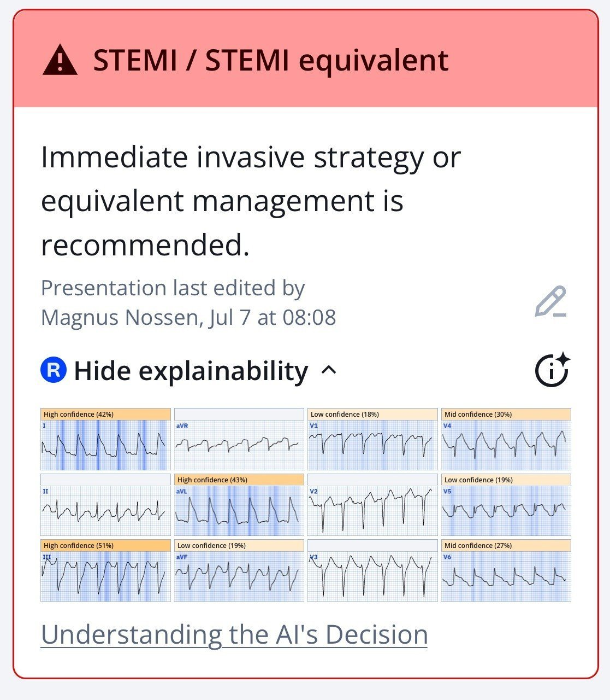
Ứng dụng PMcardio for Individuals 3.0 mới nay đã có mô hình Queen of Hearts mới nhất và khả năng giải thích của AI (bản đồ nhiệt màu xanh)! Tải ngay cho iOS hoặc Android. https://www.powerfulmedical.com/pmcardio-individuals/
Bệnh nhân được đặt nội khí quản sau ROSC. Các dấu hiệu điện tâm đồ được nhân viên y tế nhận ra là OMI và bệnh nhân được nhận chụp mạch vành cấp cứu. Bệnh nhân ổn định trong suốt quá trình vận chuyển. Tại phòng thông tim (cath lab), bệnh nhân lại ngừng tim do rung thất (VF) và được khử rung nhanh chóng. Các video dưới đây cho thấy tổn thương thủ phạm trước và sau khi đặt stent.
Hẹp gần hoàn toàn đoạn gần LAD
Ảnh tĩnh có chú thích từ lần chụp mạch ở trên

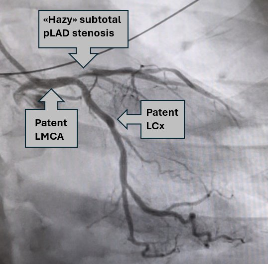
Chụp mạch sau PCI – TIMI III
Như thấy trên lần chụp mạch ban đầu, vẫn còn một ít dòng chảy tối thiểu trong LAD. Điều này, cùng với khoảng thời gian tương đối ngắn từ lúc khởi phát triệu chứng đến khi chụp mạch, góp phần làm cho nồng độ troponin T đỉnh “khiêm tốn” ở mức 2231 ng/L. Siêu âm tim chính thức phát hiện rối loạn vận động thành ở vách đoạn xa và mỏm, trong khi phân suất tống máu thất trái vẫn bình thường (>50%).
Một điện tâm đồ được ghi trước khi chuyển về bệnh viện khu vực (6 ngày sau PCI) được trình bày dưới đây — và khá bình thường, không có gì đáng chú ý, nếu xét đến biểu hiện ban đầu kịch tính của bệnh nhân.
Điện tâm đồ #2 ghi 6 ngày sau PCI

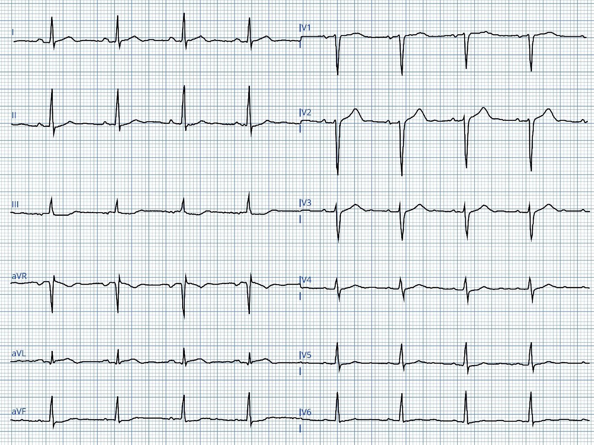
Điện tâm đồ #2 được ghi 6 ngày sau ngừng tim và PCI. Ngoài sóng T đảo ngược nhẹ ở phần cuối tại chuyển đạo aVL, điện tâm đồ này không khác nhiều so với bản ghi nền của bệnh nhân, vốn cũng cho thấy tăng tiến sóng R hơi kém ở các chuyển đạo trước tim đầu. Cả về siêu âm tim lẫn điện tâm đồ — bệnh nhân này có kết cục tốt đáng ngạc nhiên so với những bệnh nhân khác có điện tâm đồ trước viện tương tự sau ngừng tim.
Bàn luận:
Chẩn đoán điện tâm đồ trong ca hôm nay không khó. Điều tôi thấy thú vị là bệnh nhân này ngừng tim nhanh đến mức nào! Chẳng phải lạ sao khi một số bệnh nhân OMI vẫn ổn định về điện học trong khi những người khác lại ngừng tim chỉ trong vài phút? Không phải tất cả đều do ngẫu nhiên.
Các yếu tố liên quan đến tăng nguy cơ rung thất (VFib) trong bối cảnh nhồi máu cơ tim cấp bao gồm:
- Vùng nhồi máu rộng
- Nhồi máu cơ tim thành trước
- Nồng độ K+ <3.5 mEq/L
- Tuổi trẻ
- Không có tiền sử đau thắt ngực
- Ít vận động thể lực
Câu hỏi: Còn điện tâm đồ ban đầu thì sao?
Liệu chúng ta có thể nhận ra trước các hình ảnh điện tâm đồ nguy cơ cao liên quan đến ngừng tim không? Có một số y văn rất thú vị về chủ đề này.
Cipriani và cs. khảo sát các bệnh nhân STEMI và thấy hình ảnh điện tâm đồ hình tam giác “vây cá mập” (Shark-Fin) có mặt ở 5 trong số 367 bệnh nhân (1.4%) được chẩn đoán STEMI. Cả 5 bệnh nhân (100%) có hình thái vây cá mập đều ngừng tim do rung thất — so với 35 trên 362 bệnh nhân (9.6%) STEMI nhưng không có hình ảnh vây cá mập.
- 4 trong 5 bệnh nhân (80%) có ST chênh lên dạng vây cá mập trong nghiên cứu của Cipriani tiến triển sốc tim (3/5 cần ECMO — và một người được điều trị bằng thuốc vận mạch, nhưng cuối cùng tử vong do bão loạn nhịp trước khi kịp làm PCI).
- Nhu cầu hỗ trợ tuần hoàn cơ học chỉ xảy ra ở 12 trong 362 bệnh nhân (3.8%) có biểu hiện STEMI thông thường.
- Đáng chú ý — tỷ lệ gặp dạng sóng QRST hình tam giác (hình thái vây cá mập) là 10% (5/50) ở những bệnh nhân đến viện trong vòng một giờ từ lúc khởi phát triệu chứng — so với 0% (0/317) ở những bệnh nhân đến viện muộn hơn 60 phút kể từ khởi phát triệu chứng, qua đó gợi ý rằng hình thái vây cá mập phản ánh một cơ tim rất bất ổn định.
Schreiber, A. và cs. cũng khảo sát điện tâm đồ của 417 ca kích hoạt báo động STEMI và xác định hình thái vây cá mập ở 8 bệnh nhân, chiếm 1.9% nhóm nghiên cứu. Trong nghiên cứu hồi cứu đơn trung tâm này của Schreiber và cs. — 7 trong 8 bệnh nhân có hình thái vây cá mập tiến triển sốc tim cần hỗ trợ bằng thuốc tăng co bóp và/hoặc hỗ trợ tuần hoàn cơ học. Cuối cùng, chỉ 2 trong 8 bệnh nhân này sống sót đến khi ra viện.
=============================
Aizawa và cs. khảo sát điện tâm đồ của 94 bệnh nhân hội chứng vành cấp (ACS) bị rung thất trước PCI. Các nhà nghiên cứu chia ST chênh lên thành ba hình ảnh riêng biệt (Típ I, Típ II và Típ III) như trình bày trong ba hình sau.
ST chênh lên típ I

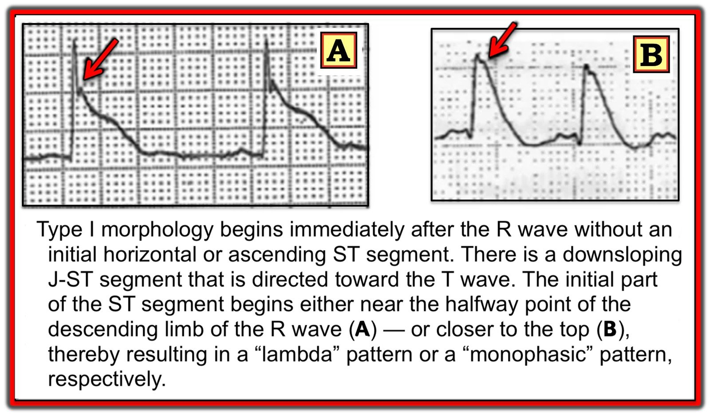
ST chênh lên típ II

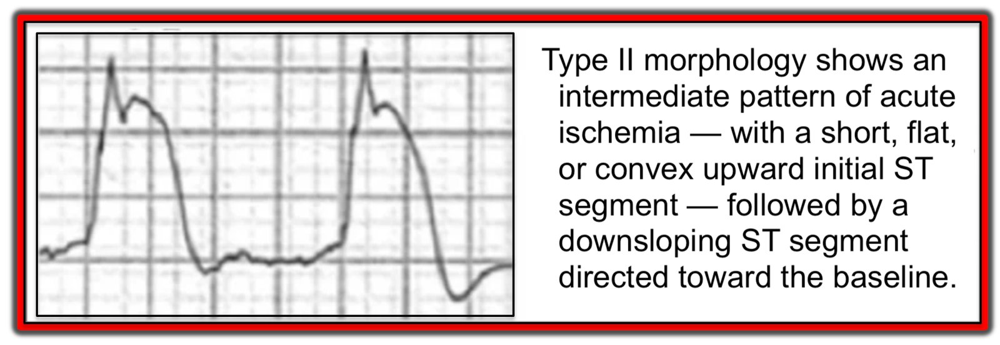
ST chênh lên típ III

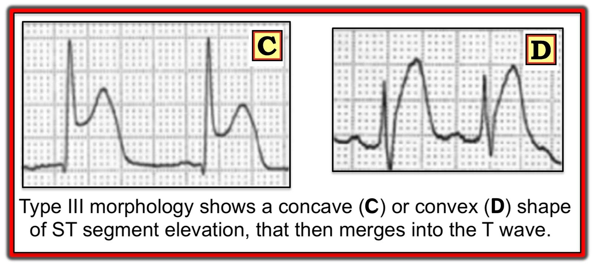
Kết luận từ nghiên cứu năm 2012 của Aizawa và cs.:
- Hình ảnh ST chênh lên típ I do Aizawa và cs. mô tả — cho thấy tương quan chặt chẽ với ngừng tim do rung thất, gặp ở hơn 50% bệnh nhân bị ngừng tim do rung thất, mặc dù chỉ có mặt ở dưới 2% các ca STEMI/OMI.
- Ngược lại, hình ảnh típ III (là dạng phổ biến nhất gặp trong STEMI/OMI) — được thấy ở >90% bệnh nhân không bị ngừng tim do rung thất.
Biểu đồ dưới đây minh họa các kết quả này từ nghiên cứu năm 2012 của Aizawa — trong đó hình thái đoạn ST được đối chiếu với tỷ lệ xảy ra ngừng tim do rung thất.

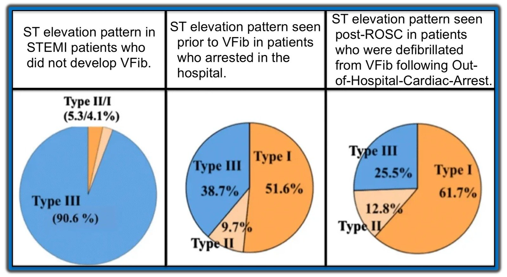
=============================
Áp dụng dữ liệu này vào ca hôm nay:
Bệnh nhân trong ca hôm nay ngừng tim rất sớm sau khi xuất hiện đau ngực. Mặc dù điều này có thể chỉ là ngẫu nhiên — hình ảnh ST chênh lên thấy ở các chuyển đạo bên của điện tâm đồ #1 rất phù hợp với điều mà y văn nêu trên gợi ý là một hình ảnh nguy cơ cao, với đoạn ST dốc xuống từ điểm J rồi hòa vào sóng T (tương tự Ô B trong hình ảnh hình thái ST chênh lên típ I của Aizawa ở trên).
Các chuyển đạo bên từ điện tâm đồ #1 của bệnh nhân hôm nay

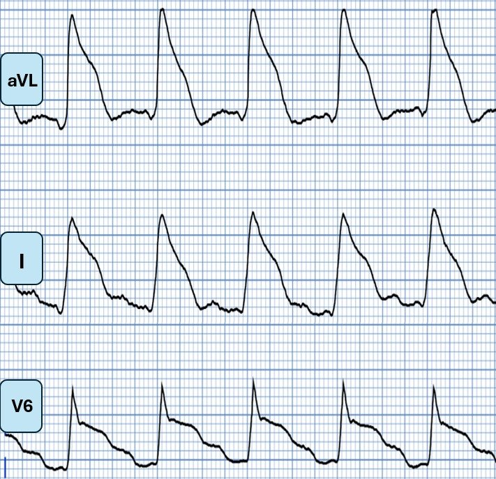
Sóng J như một yếu tố nguy cơ:
LƯU Ý: Sóng J là một dấu hiệu cực kỳ phổ biến. Khi tình cờ thấy ở một người không triệu chứng, có hình ảnh tái cực lành tính và tiền sử bản thân cũng như gia đình âm tính — chúng thường không có ý nghĩa lâm sàng. Tuy nhiên, trong một số hoàn cảnh nhất định — sự hiện diện của sóng J có thể là dấu chỉ nguy cơ loạn nhịp.
- Trong hội chứng Brugada (đặc biệt với hình ảnh Brugada típ 1) — sóng J nổi bật tạo ấn tượng ST chênh lên ở các chuyển đạo V1 đến V3. Các sóng J này hòa vào một đoạn ST dốc xuống, và liên quan chặt chẽ với rung thất.
- Sóng J cũng liên quan đến tăng nguy cơ ngừng tim do rung thất trong hạ thân nhiệt nặng.
- Thiếu máu cục bộ cấp có thể gây ra hoặc làm nổi rõ sóng J — và trong bối cảnh này, sự hiện diện của chúng có thể là một yếu tố nguy cơ rung thất.
- Fumimoto và cs. thấy rằng ở bệnh nhân đau thắt ngực do co thắt mạch, sự hiện diện của sóng J ở các chuyển đạo dưới có tỷ số chênh (odds ratio) 11,85 đối với việc xảy ra rung thất. Ca bệnh này trên blog là một ví dụ về sóng J ở chuyển đạo dưới như vậy kèm loạn nhịp thất trong bối cảnh đau thắt ngực do co thắt mạch!
BÌNH LUẬN: Chẩn đoán điện tâm đồ trong ca hôm nay không khó. Tuy nhiên, điều đáng chú ý là bệnh nhân có hình thái đoạn ST dạng vây cá mập (ST chênh lên và chênh xuống) này đã rơi vào ngừng tim do rung thất nhanh đến mức nào. Hình ảnh điện tâm đồ này cực kỳ đáng lo ngại và đã được ghi nhận là liên quan đến ngừng tim do rung thất và/hoặc trụy huyết động trong nhiều bài viết trên Dr. Smith’s ECG Blog.
- Hãy bắt đầu với bài viết năm 2018 này, “Shark Fin: A Deadly ECG Sign that you Must Know!“ (Vây cá mập: một dấu hiệu điện tâm đồ chết người mà bạn phải biết!)
- Xem ca này về một bệnh nhân ngừng tim do rung thất thứ phát sau co thắt động mạch vành. Loạn nhịp thất xảy ra chỉ trong vài phút sau khi xuất hiện thay đổi ST-T dạng vây cá mập.
- Cũng vậy — ca bệnh thú vị này của Dr. Meyers mô tả ngừng tim do rung thất với hình thái vây cá mập trên điện tâm đồ, kèm sốc tim do tắc thân chung động mạch vành trái (LMCA).
- Một ví dụ khác trong ca này về hình thái vây cá mập ở một bệnh nhân có AVNRT, nhịp nhanh thất đa dạng (PMVT), rung thất và sốc tim.
DIỄN TIẾN CỦA CA BỆNH: Bệnh nhân trong ca hôm nay được điều trị viêm phổi hít và được rút nội khí quản vài ngày sau ngừng tim. Bệnh nhân hồi phục tốt trong ngắn hạn. Không có dữ liệu theo dõi dài hạn.
=============================
Xem thêm các ca vây cá mập hoặc các ca có hình ảnh tương tự tại đây.
Những điểm cần học:
- Người trẻ vẫn bị nhồi máu cơ tim. Thời gian đến khi tái thông mạch vẫn là yếu tố tiên lượng quan trọng nhất ở bệnh nhân hội chứng vành cấp (ACS) có OMI.
- Một số hình ảnh ST chênh lên ác tính hơn, xét về tăng nguy cơ ngừng tim.
- Hình thái đoạn ST có thể dự báo tăng nguy cơ ngừng tim do rung thất (đặc biệt với hình ảnh đoạn ST dốc xuống).
- ST chênh lên dạng vây cá mập liên quan đến bất ổn định điện học, và liên quan đến nguy cơ cao sốc tim cần thuốc vận mạch và/hoặc hỗ trợ tuần hoàn cơ học.
- Sóng J xuất hiện trong bối cảnh thiếu máu cục bộ cấp là một yếu tố nguy cơ quan trọng của ngừng tim do rung thất.
Tài liệu tham khảo
- Cipriani, A. et al. (2017). The electrocardiographic “triangular QRS-ST-T waveform” pattern in patients with ST-segment elevation myocardial infarction: Incidence, pathophysiology and clinical implications. Journal of Electrocardiology, 51(1), 8–14. https://doi.org/10.1016/j.jelectrocard.2017.08.023
- Schreiber, A. et. al.(2022). A single-center retrospective study on the incidence and clinical significance of the electrocardiographic “Triangular QRS-ST-T Waveform” pattern**. Heart & Lung, 56, 86–90. https://doi.org/10.1016/j.hrtlng.2022.06.018
- Aizawa, Y. et al (2012). Characteristics of electrocardiographic repolarization in acute myocardial infarction complicated by ventricular fibrillation. Journal of Electrocardiology, 45(3), 252–259. https://doi.org/10.1016/j.jelectrocard.2011.11.007
- Zhang, L. et. al. (2021). Relationship between an ischaemic J wave pattern and ventricular fibrillation in ST-Elevation myocardial infarction patients. International Journal of General Medicine, Volume 14, 8725–8735. https://doi.org/10.2147/ijgm.s337638
- Fumimoto, T. et. al. (2017). Inferior J waves in patients with vasospastic angina might be a risk factor for ventricular fibrillation. Journal of Cardiology, 70(3), 271–277. https://doi.org/10.1016/j.jjcc.2016.12.003
====================
======================================
MY Comment, by KEN GRAUER, MD (8/8/2025):
The patient in today’s case experienced primary VFib (Ventricular Fibrillation) within minutes of the onset of her symptoms of chest pain. As opposed to secondary VFib (that typically arises days after an infarct as a result of heart failure or cardiogenic shock) — primary VFib is an electrical phenomenon that results from acute ischemia, and usually develops within hours of the onset of infarction.
- Although the incidence of primary VFib has been estimated to be between 3-12% (Glinge et al — J Geriatr Cardiol 13(9):789-797, 2016) — the true incidence is difficult to come by, because many patients die before help (and a defibrillator) can arrive.
- Today’s patient is lucky that she immediately contacted EMS — or else she would not have survived.
- Today’s patient experienced a second VFib episode after she reached the hospital — again lucky that she was in the cath lab where capable staff were able to promptly defibrillate her.
Dr. Nossen asks the question Why this patient developed VFib not once, but twice during the early hours of her care? In his discussion he explores ECG and clinical factors that help to predict which patients with acute infarction are at highest risk of developing primary VFib during the critical early hours of infarction.
- In addition to the obvious predisposing feature of a larger size infarction — features such as ischemic J waves, Brugada phenocopy patterns, and the ST elevation morphology patterns described above by Dr. Nossen help us to anticipate which of our patients with acute ischemia are at greatest risk of developing VFib under our care.
- That today’s patient was at high risk of experiencing a 2nd VFib episode — was evident from her post-ROSC ECG that I’ve reproduced below in Figure-1.
Figure-1: I’ve reproduced the post-ROSC ECG in today’s case.

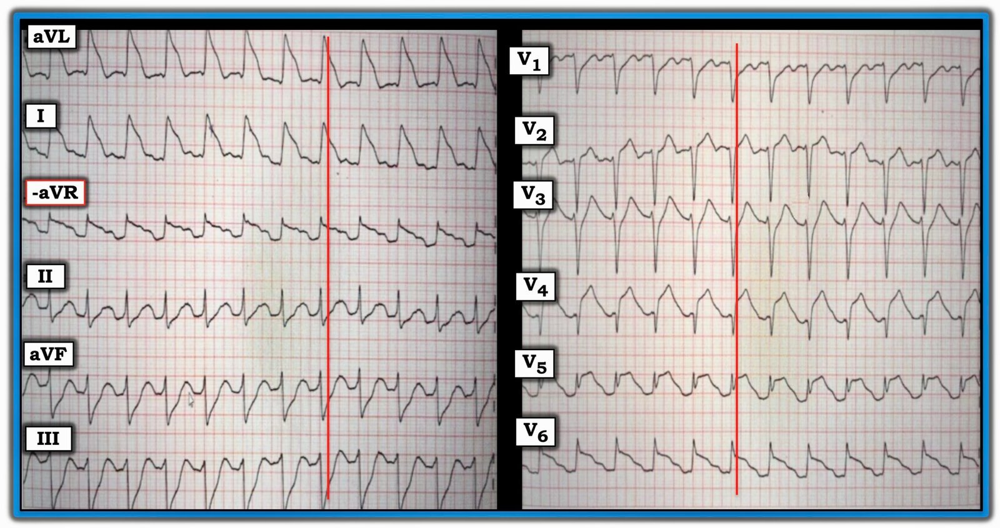
Review of the Post-ROSC ECG:
As per Dr. Nossen — the ECG in Figure-1 shows sinus tachycardia at ~145/minute, and is diagnostic of acute proximal LAD occlusion. Some additional points of note include the following:
- Uncomplicated acute MIs usually do not result in sinus tachycardia. The presence of the marked increased heart in today’s case highlights the severity of infarction and the risk of heart failure and/or cardiac arrest.
- The ECG in Figure-1 displays the logic of the Cabrera format, in that placement of the 6 limb leads is sequential with 30 degrees of spacing between leads. This facilitates appreciation of the gradual reduction in the amount of ST elevation (from lead aVL — to lead I — to lead -aVR), which is then followed by a sequential gradual increase in the amount of reciprocal ST depression (from lead II — to lead aVF — to lead III).
- Lead V5 displays T-QRS-D (Terminal QRS Distortion). Although obviously not needed to diagnose acute infarction in today’s case — it’s good to hone your skill in recognizing this helpful ECG feature (See My Comment in the November 14, 2019 post of Dr. Smith’s ECG Blog). NOTE: Although recognition of T-QRS-D is best made when this sign is seen in leads V2,V3 and/or V4 — the lack of an S wave reaching the baseline in lead V5 is so pronounced that I assessed this sign as positive in Figure-1.
- Extensive loss of anterior forces is already evident in Figure-1 — in that there is a deep QS wave in lead V4. This provides insight that large infarction Q waves can sometimes develop in less than 1 hour!
- It’s easy to get fooled by Shark-Fin ST-T wave patterns — as per Dr. Nossen’s case in the September 27, 2023 post — in which the initial 12-lead tracing looked like VT with marked QRS widening, when in reality Shark-Fin ST elevation was a mimic for the QRS widening that simulated VT.
- In Figure-1 — I’ve drawn in vertical RED lines where the QRS ends. Distinguishing the end limit of the QRS complex is almost impossible in leads aVL and I of today’s tracing. Fortunately we can turn to the chest leads to assist in determining true QRS width.
- Finally — the ST elevation morphology in lateral leads I, aVL and V6 simulates the high-risk Type I ST segment morphology for developing VFib (leads I and aVL resembling Panel B — and lead V6 resembling Panel A). Given the extensive ST segment deviation (ediffuse ST elevation and depression indicative of a very large infarction) and this high-risk ST segment morphology pattern — the 2nd episode of VFib in today’s patient came as no surprise.